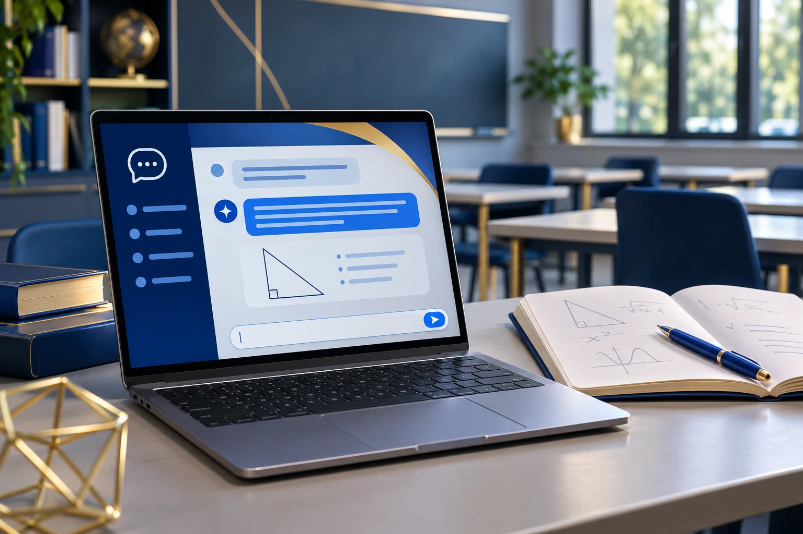
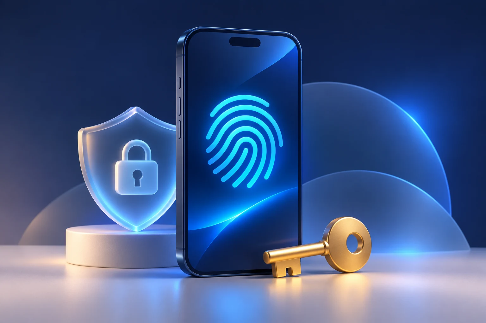

Understand the change behind the headline. These explainers break down what happened, who it affects, and why it matters, with a practical next step and links to the original sources.
Featured explainers: selected technology announcements from 2025, explained for everyday use.
AI & Learning
Google's Guided Learning puts the focus on understanding
Gemini's learning feature uses questions and step-by-step explanations. Here's how to approach it without handing over your thinking.
Technology Made Simple | November 18, 2026
Explainer based on Google's August 6, 2025 announcement.

AI-generated illustration; not an actual Gemini screenshot.
What happened
Google introduced Guided Learning in Gemini on August 6, 2025. The company described an experience that asks questions, breaks problems into steps, and adapts explanations to the learner. It can also include diagrams, videos, and quizzes. The stated goal is to help people understand a subject rather than simply receive an answer.
What that means
Think of the difference between reading a worked example and explaining the next step yourself. A useful study conversation gives you room to attempt an answer, notice a mistake, and ask a follow-up question. Google's announcement describes a tool built around that kind of interaction. It does not establish that every response will be correct or that every student will learn more.
Why It Matters
For students and beginners, the useful question is: Can I explain this without the tool? Treat an AI explanation as something to examine and practice, rather than something to copy into an assignment. The value comes from the thinking you do during and after the conversation.
Who it affects
Students reviewing difficult material, adults learning unfamiliar topics, and educators considering how AI might fit into practice activities. School rules and account access can differ, so check what your class allows before using an AI tool.
Try this
Choose one concept from your notes. Ask: “Give me one practice question. Let me try before you explain the answer.” Write your answer first, compare the explanation with your course materials, then attempt a new question without AI. If you still cannot explain the steps, return to your notes or ask your instructor.
Takeaway: Use AI to create another chance to practice, then check what you can do on your own.
Microsoft's passwordless account announcement highlights a sign-in option worth understanding. Here's what changes for everyday users.
Technology Made Simple | November 18, 2026
Explainer based on Microsoft's May 1, 2025 announcement.

AI-generated concept illustration of passkey sign-in.
What happened
On May 1, 2025, Microsoft announced that new consumer Microsoft accounts would be passwordless by default, with several passwordless sign-in options. The announcement also described a sign-in experience that favors available passwordless methods and encourages passkey enrollment. It did not mean every existing account immediately lost its password.
What is a passkey?
A passkey is a digital sign-in credential for a particular website or app. You usually approve its use with the same kind of check used to unlock a device, such as a fingerprint or PIN. Passkeys can be stored through a supported provider or on a security key; some sync between devices while others stay on one device.
Why It Matters
Passkeys are designed to resist phishing, where a fake sign-in page tricks someone into giving away a password. They can also reduce the need to remember another password. That makes them useful to understand, even if you are not ready to change every account. They do not protect against every kind of online scam.
Who it affects
Anyone who encounters a passkey option while creating an account or signing in to a supported service. The available choices depend on the service, your device, and your passkey provider.
Try this
On a service you already use, open the official account settings and read its passkey instructions. Before making changes, find out where the passkey will be saved and how you would recover access after losing a device. Start with one account you understand, and follow the provider's instructions rather than a link in an unexpected message.
Takeaway: A simpler sign-in still deserves a clear recovery plan.